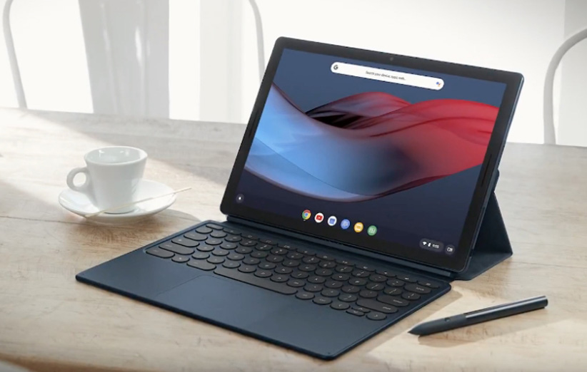

DigiNews
DigiNews
تمامی حقوق این سایت برای دیجی نیوز محفوظ است. نقل مطالب با ذکر منبع بلامانع است.
copy Right© 2022 DigiNews News Agancy, All rights reserved

بررسی میزان تعمیرپذیری تبلت Pixel C گوگل توسط وبسایت «iFixit»
گوگل تبلت منحصر به فرد Pixel C را در سپتامبر سال قبل رونمایی کرد. شاید این محصول بعد از گذشت این مدت دیگر تازه به نظر نرسد، اما هنوز هم یکی از قدرتمندترین اندرویدی های بازار ...
گوگل تبلت منحصر به فرد Pixel C را در سپتامبر سال قبل رونمایی کرد. شاید این محصول بعد از گذشت این مدت دیگر تازه به نظر نرسد، اما هنوز هم یکی از قدرتمندترین اندرویدی های بازار به حساب می آید و اکنون بالاخره وبسایت iFixit به سراغ این دست پرورده اهالی مانتین ویو هم رفته تا میزان تعمیرپذیری اش را تعیین کند.
کالبدشکافی Pixel C نشان داد که تعمیر این گجت زیبا و توانمند به هیچ وجه آسان نیست و نیاز به صبر و دقت زیادی دارد. با آن که برخی قطعات تبلت فوق را می توان بدون مشکل تعویض نمود، اما برخی دیگر از اجزاء، از جمله برد اصلی، با مقدار قابل توجهی چسب در محل خود محکم شده اند.
برای جداسازی نمایشگر تبلت گوگل، مجبورید از حرارت دهنده استفاده کنید تا چسب های دورتادور آن جدا شوند. دوربین جلو به جای بدنه اصلی، متصل به نمایشگر است و کابل اتصال سنسور مجاورت نیز درست در پشت آن قرار گرفته. همین مسائل باعث می شوند که دسترسی به صفحه نمایش بیش از پیش دشوار گردد.
خوشبختانه بعد از جداسازی وقتگیر پنل ۱۰.۲ اینچی، بیشتر اجزای داخلی Pixel C در دسترس قرار خواهند گرفت. به نظر می رسد تعویض هیچ قطعه ای از این تبلت، مثل باتری آن چالش برانگیز نباشد، چراکه تمام سطح پشتی باتری با چسبی بسیار قدرتمند به بدنه فلزی چسبیده است.
از طرف دیگر اما، عمده قطعات سخت افزاری تبلت ۱۰ اینچی گوگل به صورت ماژولار هستند و به سادگی می توان پیچ های مربوطه را باز و آنها را تعویض نمود. قطعاتی چون دوربین اصلی، پورت USB-C و دکمه های کناره بدنه از جمله این موارد به شمار می روند.
به محض آن که بتوانید به چسب های زیاد اطراف برد اصلی فائق بیایید، چیپست قدرتمند ۶۴ بیتی Tegra X1 ساخت انویدیا به همراه کنترلر وای فای BCM43540LKUBG 5G Wi-Fi 802.11ac ساخت براودکام، میکروکنترلر ۳۲ بیتی STM32F3x8 و چیپ صوتی NAU99L25 و ۲ چیپ حافظه K4F2E304HMMGCH LPDDR4 سامسونگ، هر کدام به ظرفیت ۱.۵ گیگابایت، در مقابل دیدگانتان ظاهر می شوند.
با در نظر گرفتن تمام موارد فوق، وبسایت iFixit تبلت Pixel C گوگل را لایق دریافت امتیاز تعمیرپذیری ۴ از ۱۰ می داند. گرچه، نگاهی به درون این گجت قدرتمند ما را وادار می سازد که تلاش طراحان گوگل برای جای دادن تمام این مجموعه سخت افزاری جذاب در ضخامتی حدود ۷ میلیمتر را تحسین کنیم.
DigiNews
DigiNews
تمامی حقوق این سایت برای دیجی نیوز محفوظ است. نقل مطالب با ذکر منبع بلامانع است.
copy Right© 2022 DigiNews News Agancy, All rights reserved